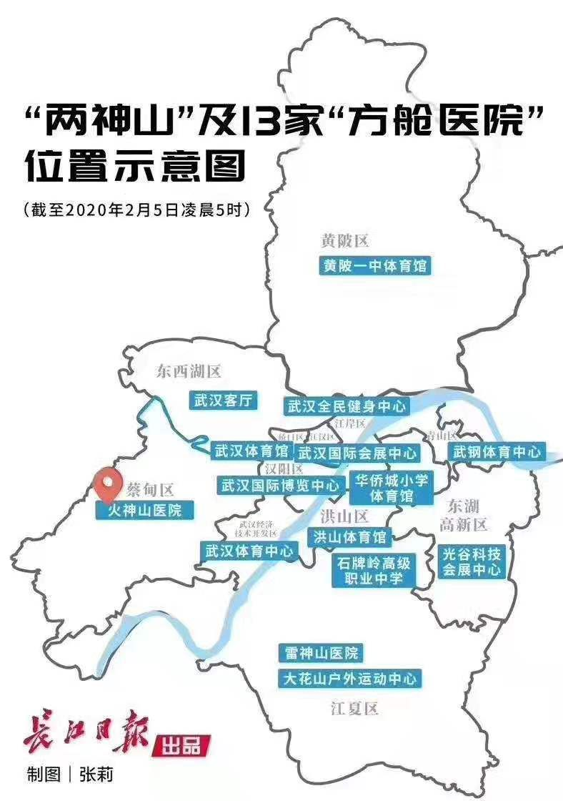
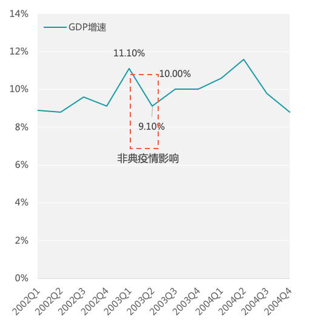

武汉接到两个硬任务：检测全部疑似病例，收治所有确诊病人
原文链接 备份链接 武汉市各区正在加紧把所有发热人员集中隔离，并进行全部发热人员的检测，目的是让疫情全部暴露出来，之后疫情防控也将从“攻坚战”转至“歼灭战” 图/法新 文 |《财经》特派武汉记者 言清 王小 编辑 | 王小 “今天的会非 …

非常时期，武汉成了全国人民挂念、祈福的城市。封城后，武汉人民的真实生活是什么样？
正和岛自1月26日起特别推出《叶青：我在武汉疫区的第N天》专栏。叶青是一位定居武汉40年的市民，也是一名学者和官员。接下来的一段时间，他会用笔记录下亲身经历的、观察到的武汉，为此他还专门外出到大街上、到超市里，获得一手真实的信息。
这将是一份宝贵的史料。感谢他，我们得以更真切地感知到武汉疫情。让我们一起为武汉加油！
作者：叶青 中南财经政法大学教授、博导 湖北省统计局副局长 正和岛蓝色岛邻
封面：人民日报
来源：正和岛案例（ID：zhenghedaoanli）

新增疑似病例连续两天下降
4日，正月十一，武汉阳光灿烂。
4日，全国新增确诊病例3887例（湖北省3156例），新增重症病例431例（湖北省377例），新增死亡病例65例（湖北省65例），新增治愈出院病例262例（湖北省125例），新增疑似病例3971例（湖北省1957例）。
这是新增疑似病例连续第二天下降。2月2日新增疑似病例5173例（湖北省3260例），3日新增疑似病例5072例（湖北省3182例）。
截至4日，全国累计报告确诊病例24324例，现有重症病例3219例，累计死亡病例490例。
4日，湖北省新增病例3156例，其中，武汉市1967例、黄石市104例。全省新增死亡65例，其中，武汉市49例、襄阳市1例、宜昌市1例、荆州市2例、荆门市2例、孝感市1例、黄冈市6例、随州市2例、仙桃市1例。
截至4日，湖北省累计报告病例16678例，其中，武汉市8351例、黄石市509例。
已治愈出院520例，死亡479例，其中，武汉市362例、荆门市16例、鄂州市18例、孝感市18例、黄冈市25例、随州市8例。
4日，周二，沪深两市低开高走，创业板指放量大涨近5%，逼近周一跳空缺口，市场情绪明显回暖，两市涨停个股达到160家，跌停个股缩窄至不足百家。
上证指数报2783.29点，上涨1.34%，成交额3740.68亿；深证成指报10089.67点，上涨3.17%，成交额5360.37亿；创业板指报1882.69点，上涨4.84%，成交额1794.47亿。沪深两市合计成交9101.06亿。北上资金净流入49.20亿元。
很多人预测的“大股灾”可能是一闪而过。“黑天鹅”没有降落在股市上。

全国再支援湖北2000人
4日，中央应对新型冠状病毒感染肺炎疫情工作领导小组召开会议。提出了两大实招：
一是提高收治率和治愈率。
征用一批酒店、场馆等集中收治轻症患者或观察密切接触者，将部分三级综合医院转为定点收治医院，调集一批应急方舱医院、再增加2000名医护人员支援湖北，5日晚上到。调派高水平医护团队整建制接管重症救治医院或病区。
二是医疗、生活物资保障。
截至2号20点，已有来自国家卫健委、国家中医药管理局、中国中医科学院及29个省（区、市）和军队的68支医疗队、8310名医疗人员支援湖北省疫情防控工作。
其中，共有57支医疗队，6775名医疗队员被安排在武汉市的27家定点医院，其中包括2日交付的火神山医院。
共有11支医疗队，1535名医疗队员安排在武汉之外的10个市，其中疫情较重的黄冈安排了2支，一共549名医疗队员。
雷神山医院建有1500张床位，预计5日正式交付。
按照火神山医院的规模，这里需要2000名左右的医护人员，估计又是来自于军队，也有可能来自地方。
这2000名医护人员中，有9名来自我的老家——福建南平的。
4日上午九点半，正在工作中的南平市建阳第一医院护师林珊接到医院护理部的电话：中午将安排她前往武汉支援。
上午11点，交接完科室工作后，林珊匆匆回家收拾行李。面对未满6周岁的女儿，林珊有点不舍，女儿问妈妈说：“妈妈，你整理衣服去哪里啊？我们去旅游吗？太开心了!”看着女儿开心的笑容，林珊忍住离别的思绪：“妈妈临时有事，出差几天，家里有外公外婆陪着宝宝。”
中午12点，林珊坐上医院送她到南平市集合的车，和南平市第二批援助湖北医疗队的另外9名队员一起，赶往福州集结，驰援武汉。
看到《建阳新闻》上的这条内容，我转发，并留言：武汉感谢，来自家乡的天使。

**13个方舱医院+火雷两医院
**
4日，中国工程院副院长、中国医学科学院院长王辰，这位非典时期曾担任北京医疗专家组组长的呼吸与危重症医学专家就当前疫情防控的焦点问题，在武汉接受了新华社记者的专访。
这个专访中，回答了很多问题。也看出了专家组的作用。
他说：
我和一些专家在2月1日到达武汉，经过调研后发现当前最紧迫的任务，是解决病毒的社会传播和扩散问题，目前家族式聚集发病形势很严峻。如果大量轻症患者居家或疑似病人在社区游动，会成为疫情扩散的主要源头，而且在医院床位紧缺的情况下，这些患者若得不到有效收治，会陷入困境甚至生命危险。这是传染源控制不力，是社会和专业干预不够的表现，要采取强有力乃至较为极端的专业措施。如果不介入，后果会更严重。
于是，在中央赴湖北指导组的推动下，武汉市从2月3日起迅速协调集中收治确诊轻症病人的大型医疗场所，将会展中心、体育场馆等改造成方舱医院。
很多网民最关心的是：大量患者收治在方舱医院会否造成交叉传染？
王辰说：由于是确诊患者，病原相同，交叉感染这个问题不是突出问题。入院前除新型冠状病毒核酸检测阳性外，还会经过流感抗原筛查，尽最大可能避免可能的生物安全风险。
由于是大规模集中收治，相关配套管理、保障工作要抓细抓好。
冷，怎么办？有电热毯。
现在，武汉在建的方舱医院有13所。真可谓是雷厉风行。
除了3日晚连夜开工的武汉国际会展中心、武汉客厅、洪山体育馆外，另有江岸区武汉全民健身中心、硚口区武汉体育馆、洪山区石牌岭高级职业中学、华侨城小学体育馆、汉阳区武汉国际博览中心、江夏区大花山户外运动中心、黄陂区黄陂一中体育馆、东湖高新区光谷科技会展中心、武汉经济技术开发区武汉体育中心、青山区武钢体育中心等10处确认开建“方舱医院”。

这些方舱医院来自全国。
一位国家卫健委官员4日表示，“我们已调集20家方舱医院，从今天开始将陆续到达武汉；我们又从全国陆续调集1400名护士到武汉看护患者（包括福建南平的9名，这应该是2000名中的一部分）；同时从中国CDC、中国医学科学院、广东省CDC调集了3个移动P3实验室”。
武汉的医院本来就多，有句老话“医院多于米店”，现在又增加15处方舱医院（包括火神山、雷神山医院），各区的集中隔离酒店，8000左右的医护人员外援，整个城市就像是一座大医院。为了抗击“新型肺炎”，也只好这样。
我的好友——关升红给我留言：
有三点与您讨教，一是全面（全民）反思与对策，并科学固化；二是为抗疫情一线医护人员（特别是外援人员）授“2020中国武汉抗疫情大爱勋章”并出台相应的文件；三是武汉城市发展定位“世界大健康都市”；四是建议设立抗疫情公园“敬畏生命园”或直接叫“敬畏园”。
好建议。这个“敬畏生命园”可以放在南岸嘴——中国角。刘醒龙建议在南岸嘴树立一座抗击新型肺炎纪念碑。
这种深刻反思，不仅老百姓在做，省市领导也在做。
在3日中共中央政治局常务委员会开会之后，湖北省委书记蒋超良连夜开会，共提到了7方面内容，分别是：
提高政治站位，进一步压实防控责任。
严格落实“四早”措施，千方百计切断传染源。
提高医疗救助能力。
做好基层群防群治，加强社区力量投入。
切实维护正常经济社会秩序，全力保障群众基本生活。
做好宣传教育和舆论引导工作。
深刻反思。

口罩带来的处分
处分也不能忘记。
湖北省红十字会被卷入舆论风暴，因拨给武汉仁爱医院1.8万只KN95口罩，以及物资分发效率低下等问题，质疑声四起。
4日，湖北省纪委监委通报了湖北省红十字会有关领导和干部失职失责问题，张钦、陈波、高勤3名主要领导被问责，张钦被免职。
在2月2日，张钦曾接受《中国新闻周刊》采访，表示：“我们工作中确实有失误，今后还要加强工作（要求），认认真真地、扎扎实实地把每一个捐赠方的意愿，用到该用的地方上去。”
同样，武汉市也严肃查处了市防疫应急物资储备仓库违规发放口罩问题。经武汉市纪委监委研究，并报市委批准，决定免去夏国华武汉市统计局党组成员、副局长职务，并给予其党内严重警告、政务记大过处分；对武汉市发改委党组书记、主任，市统计局党组书记、局长孟武康和武汉市政府办公厅副主任黄志彤予以诫勉谈话。
虽然有我的部下，还是要带上一笔。

“新型肺炎”的经济影响
从短期来看，“新型肺炎”带来很多不方便。
前几日，我强调，在医院之外，超市是最危险的地方，一定要加强管理。现在，超市的称重员成为最危险的岗位。
今天，我还想提一个建议：超市蔬菜、水果固定包装，减少称重环节，减少感染的机会。
比如，大白菜5斤一包，拿了就走。
去超市有危险，那么我们就以楼宇为单位，组织购菜群，由蔬菜基地定时定量送来。比如一箱子菜6-7种，100元左右。这也是办法。
从长远来看，“新型防疫”对经济的影响更大。权威机构的分析很重要：
“非典”对旅游的影响可以看出“新型肺炎”对旅游的影响，“非典”导致2003年国内旅游总花费下降11.24%，但是，2004年增长36.85%。

中国贸促会赵萍表态：疫情结束之后1-2个月，餐饮消费就会出现大规模的增长。而对于旅游消费，虽然在疫情期间受到了明显的遏制，但是可能会在五一、端午小长假以及暑期档出现爆发式的增长，到十一黄金周，旅游消费会恢复到一个正常的状态。如果五一能够成为七天的黄金周，算是一个补偿吧。
“新型肺炎”对一季度的影响肯定会大。“非典”有先例。

2019年四个季度的GDP增长率分别是：6.4%、6.2%、6.0%、6.0%，创造了三次新低。6.4%是2009年一季度、2018年四季度的老新低，6.2、6.0%是新的新低。
估计2020年一季度的增长率会创造新低。这些年来一直在期待的“底部”，难道就这样被一只蝙蝠砸出来了吗？
乘联会秘书长崔东树表态：1、2月份受疫情影响，车市下滑的幅度可能在25%以上，甚至到30%左右。但如果不考虑特殊因素带来的风险，2020年的3-12月份市场仍具有实现正增长的可能性。分两个阶段来看，疫情好转之后，车市将出现由负转正的情况。
因此，如何在9日上班之后，使经济尽快复苏？各地都在出“条”。
苏州10条、安徽16条……重庆是20条，创造了一个新高。这些都是帮助中小企业渡过难关的办法。
希望湖北省也出台。当然，目前可能顾不上。

小结
新增疑似病例连续第二天下降。
再派援军2000。历史会记住这一切。
即使成为一座大医院，武汉也在所不惜。
对经济的影响会很大，但是，深刻反思、吸取教训更重要。
作者：叶青，1962年3月出生，第十、十一届全国人大代表、国务院新闻办专家库专家，曾任中国民主促进会湖北省委员会副主任委员（2000-2017）。他被网民称为“中国最具个性官员”、“车改第一人”，曾荣获2007年度人民网十大社会责任博客、南方周末2011年两会“十大言者”、《南风窗》2012年十大公益人物、2019政务微博十年·先锋等等。
原文链接 备份链接 武汉市各区正在加紧把所有发热人员集中隔离，并进行全部发热人员的检测，目的是让疫情全部暴露出来，之后疫情防控也将从“攻坚战”转至“歼灭战” 图/法新 文 |《财经》特派武汉记者 言清 王小 编辑 | 王小 “今天的会非 …
原文链接 备份链接 什么拉长了社会捐赠物资从红十字会的仓库到疫情一线医务人员手中的最后短暂的路程？又是谁夺走了医生上战场的武器？ 记者 | 郭苏妍 叶雨晨 邓舒夏 王一越 编辑 | 张云亭 制图 | 程 星 2月1日，中国红十字总会工作 …
原文链接 备份链接 非常时期，武汉成了全国人民挂念、祈福的城市。封城后，武汉人民的真实生活是什么样？ 正和岛自1月26日起特别推出《叶青：我在武汉疫区的第N天》专栏。叶青是一位定居武汉40年的市民，也是一名学者和官员。接下来的一段时间，他 …
原文链接 备份链接 17 年前的那场公共卫生危机，未能及时公开疫情成为事后被诟病最多的问题之一，也成为中国疾病防控系统以及政府信息公开等许多方面的重要转折点。 而多年后，越来越多的互联网官方渠道成为了重大事件的定海神针，「官宣」被普遍接 …
原文链接 备份链接 武汉抗“疫”27日考：追忆那些被贻误的宝贵时机 2020-01-26 20:28 作者：张家振 来源：中国经营网 本报记者 张家振 武汉报道 （武汉抗“疫”一线的逆行者。） 1月24日，除夕夜。39岁的张琴（化名）和丈 …